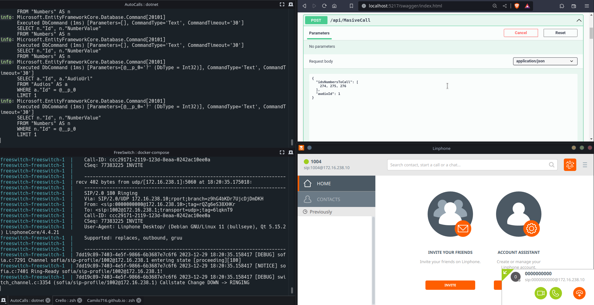

← Go Back
Bulk Dialer API
AutoCalls is a project that provides functionality for saving phone numbers and audio files in a database, and then conducting mass phone calls to multiple numbers while playing an audio message

Features
- Phone Number Management: Easily store and manage phone numbers in a database.
- Audio Storage: Store audio byte stream in a database for playback during phone calls.
- Mass Calling: Initiate mass phone calls to a list of numbers and deliver a predefined audio message.
Technologies Used
- Backend: ASP.NET, Entity Framework
- Database: PostgreSQL
- Telephony Integration: FreeSWITCH
- Testing: XUnit